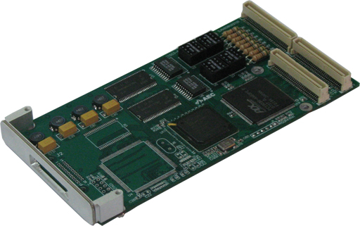
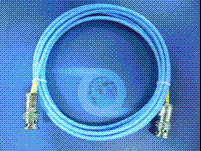
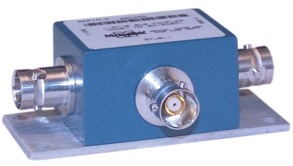
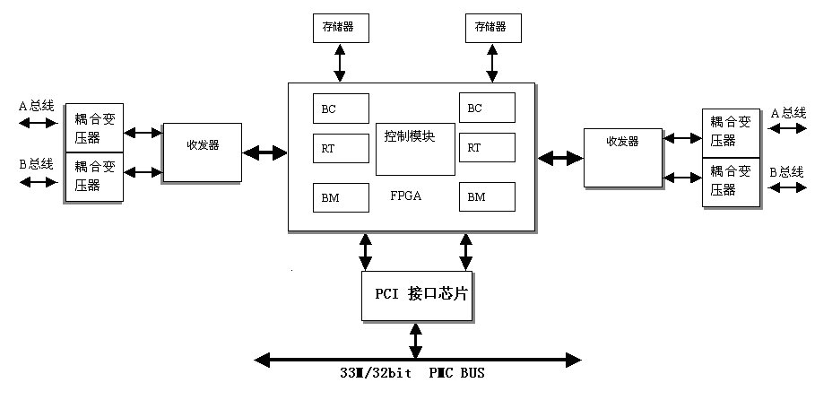

| Simpole® |
|
|---|
此1553板卡为北京神州飞航科技有限责任公司的AEC1553板卡。AEC1553-PMC-FBC31RT-2/S5是一款1553总线通讯板卡，PMC总线，双通道（双冗余）多功能MIL-STD-1553通讯卡。本节依据北京神州飞航科技有限责任公司的相关资料，结合在Simpole中的应用，介绍1553板卡的硬件信息。
具体内容如下：
AEC1553板卡是北京神州飞航科技有限责任公司的遵循1553协议规范的通信板卡。AEC1553-PMC-FBC31RT-2/S5是一款1553总线通讯板卡，PMC总线，双通道（双冗余）多功能MIL-STD-1553通讯卡。其强大的功能能够满足不同用户的工业测量和自动化控制需求，良好的兼容性适用于各类系统配置。 该板具有BC/RT/MT 一体化特征通过软件编程可选择该板工作在总线控制器（BC）、 远程终端（RT）或总线监视器（MT）模式。
AEC1553板卡外形图如下图所示。

AEC1553板卡有2个通道共4个接口：第一通道BusA，第一通道BusB，第二通道BusA，第二通道BusB。各个接线端口之间通过专用的1553连接线缆或耦合器连接，进行数据通信。
AEC1553板卡根据GUI界面的通道号，将1553板卡的A\B通道通过专用的1553连接线直接连接或者通过耦合器连接。专用的1553连接线和耦合器分别如下图所示。
 
功能结构图如下所示：

BC模式：
RT模式：
MT模式：
以上简要给出一些AEC1553 板卡信息，详细内容请参看相关pdf文档。
| AEC1553 SimpoleD Reference |
|
|---|